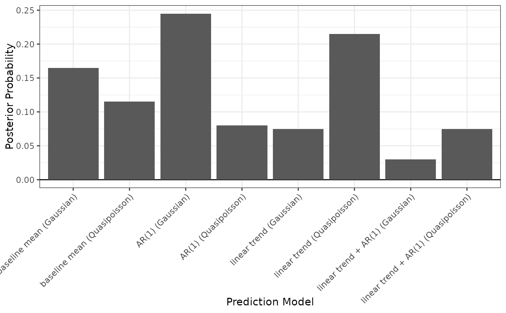
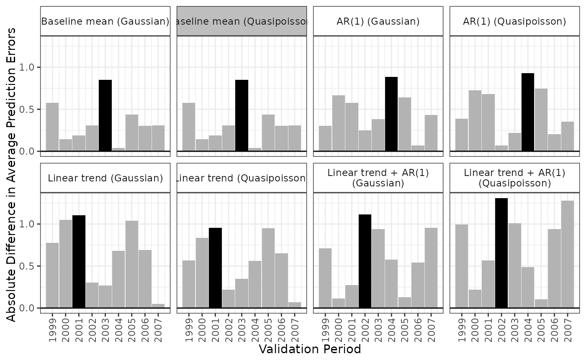

apm_pre() fits models to the pre-treatment data to compute the observed prediction errors for each model in each period and compute the Bayesian model averaging (BMA) weights eventually used in apm_est() to estimate the treatment effect.
Usage
apm_pre(
models,
data,
weights = NULL,
group_var,
time_var,
val_times,
unit_var,
nsim = 1000L,
cl = NULL,
verbose = TRUE
)
# S3 method for class 'apm_pre_fits'
summary(object, order = NULL, ...)Arguments
- models
an
apm_modelsobject; the output of a call toapm_mod().- data
a dataset containing all the variables named in the supplied models (i.e., the outcome and any predictors) as well as any variable named below.
- weights
an optional vector of weights (e.g., sampling weights) used to fit weighted regression models.
- group_var
string; the name of the treatment variable in
datadefining the "to be treated" and "not to be treated" groups. The corresponding variable should take on values of 0 and 1 only.- time_var
string; the name of the variable in
datacontaining the time variable.- val_times
a numeric vector corresponding to the pre-treatment times that will be used as validation times when select the model with the optimal average expected prediction error.
- unit_var
string; the name of the unit ID variable in
data.- nsim
the number of simulated draws from the joint posterior of the fitted models to use to compute the BMA weights. Default is 1000. More is better but takes longer.
- cl
a cluster object created by
parallel::makeCluster(), or an integer to indicate number of child-processes (integer values are ignored on Windows) for parallel evaluations. It can also be"future"to use a future backend.NULL(default) refers to sequential evaluation. See theclargument ofpbapply::pblapply()for details.- verbose
logical; whether to print information about the progress of the estimation, including a progress bar. Default isTRUE.- object
an
apm_pre_fitobject; the output of a call toapm_pre().- order
how to order the summary;
NULL(the default) is the same ordering as the models supplied toapm_pre(),"weights"orders the models by their computed BMA weights with the highest weights on top, and"errors"orders the models by their maximum absolute difference in prediction errors with the smallest errors on top.- ...
ignored.
Value
apm_pre() returns an apm_pre_fits object, which is a list containing the models supplied to models, a grid of all fitted models, a list of all model fit objects, a list of all estimated coefficients, the joint covariance of the coefficients, the dataset supplied to data, and other components supplied to apm_pre().
summary() produces a data frame containing the BMA weights and maximum absolute difference in mean prediction errors for each model, ordered according order. An asterisk appears next to the model with the smallest error.
Details
apm_pre() creates a grid of all models and all time points and fits all corresponding models. For each validation time supplied to val_times, each model is fit using all previous times. For example, for a validation time of 5, a model is fit with data only from periods 1-4.
lm(), glm(), or MASS::glm.nb() are used to fit the given models. The joint covariance matrix of all the coefficients is computed using the SUEST method described in Mize et al. (2019, p164), which is also used by the STATA command suest. This is equivalent to the covariance matrix computed by stacking the score equations for the models and fitting them using M-estimation and yields the equivalent of the HC0 covariance matrix for all within-model covariances. The covariance is clustered by unit_id.
To compute the BMA weights, random variate drawn from a multivariate normal distribution nsim times with mean vector equal to the concatenated model coefficients and covariance equal to the joint covariance matrix described above. For each iteration, the absolute average prediction errors are calculated for each model and validation period. A model is considered the "winner" if it its largest absolute average prediction error across validation periods is the smallest among all models. The BMA weight for each model is equal to the proportion of iterations in which that model was the "winner".
See also
lm(),glm(), and MASS::glm.nb() for the functions used to fit the models; apm_est() to compute the ATT and its uncertainty; plot.apm_pre_fits() for plotting an apm_pre_fits object.
Examples
data("ptpdata")
# Combination of 8 models: 2 baseline formulas,
# 2 families, 2 lags
models <- apm_mod(crude_rate ~ 1,
family = list("gaussian", "quasipoisson"),
time_trend = 0:1,
lag = 0:1)
models
#> - Model 1: baseline mean (Gaussian)
#> crude_rate ~ 1
#> family: gaussian(link = "identity")
#> outcome lag: none
#> outcome diff: none
#> log outcome: no
#> time trend: none
#> unit fixed effects: no
#>
#> - Model 2: baseline mean (Quasipoisson)
#> crude_rate ~ 1
#> family: quasipoisson(link = "log")
#> outcome lag: none
#> outcome diff: none
#> log outcome: no
#> time trend: none
#> unit fixed effects: no
#>
#> - Model 3: AR(1) (Gaussian)
#> crude_rate ~ 1
#> family: gaussian(link = "identity")
#> outcome lag: 1
#> outcome diff: none
#> log outcome: no
#> time trend: none
#> unit fixed effects: no
#>
#> - Model 4: AR(1) (Quasipoisson)
#> crude_rate ~ 1
#> family: quasipoisson(link = "log")
#> outcome lag: 1
#> outcome diff: none
#> log outcome: no
#> time trend: none
#> unit fixed effects: no
#>
#> - Model 5: linear trend (Gaussian)
#> crude_rate ~ 1
#> family: gaussian(link = "identity")
#> outcome lag: none
#> outcome diff: none
#> log outcome: no
#> time trend: linear
#> unit fixed effects: no
#>
#> - Model 6: linear trend (Quasipoisson)
#> crude_rate ~ 1
#> family: quasipoisson(link = "log")
#> outcome lag: none
#> outcome diff: none
#> log outcome: no
#> time trend: linear
#> unit fixed effects: no
#>
#> - Model 7: linear trend + AR(1) (Gaussian)
#> crude_rate ~ 1
#> family: gaussian(link = "identity")
#> outcome lag: 1
#> outcome diff: none
#> log outcome: no
#> time trend: linear
#> unit fixed effects: no
#>
#> - Model 8: linear trend + AR(1) (Quasipoisson)
#> crude_rate ~ 1
#> family: quasipoisson(link = "log")
#> outcome lag: 1
#> outcome diff: none
#> log outcome: no
#> time trend: linear
#> unit fixed effects: no
# Fit the models to data
fits <- apm_pre(models, data = ptpdata,
group_var = "group",
time_var = "year",
val_times = 1999:2007,
unit_var = "state",
verbose = FALSE)
fits
#> An `apm_pre_fits` object
#>
#> - grouping variable: group
#> - unit variable: state
#> - time variable: year
#> - validation times: 1999, 2000, 2001, 2002, 2003, 2004, 2005, 2006, 2007
#> - number of models compared: 8
#> - number of simulation iterations: 1000
#>
#> Use `summary()` or `plot()` to examine prediction errors and BMA weights.
summary(fits)
#> BMA weights Max|errors|
#> baseline mean (Gaussian) 0.141 0.850
#> baseline mean (Quasipoisson) 0.134 0.850 *
#> AR(1) (Gaussian) 0.273 0.883
#> AR(1) (Quasipoisson) 0.082 0.932
#> linear trend (Gaussian) 0.078 1.102
#> linear trend (Quasipoisson) 0.183 0.953
#> linear trend + AR(1) (Gaussian) 0.038 1.113
#> linear trend + AR(1) (Quasipoisson) 0.071 1.308
#>
#> Use `plot()` to plot prediction errors and BMA weights.
plot(fits, type = "weights")

plot(fits, type = "error")
